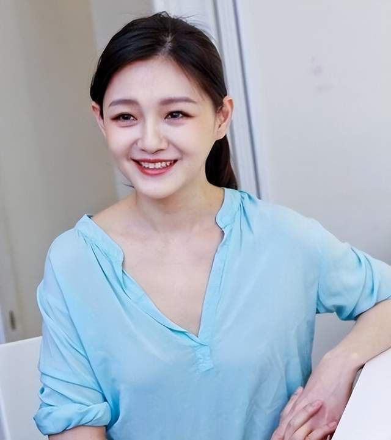

最近关于大S和具俊晔的消息，确实我们介绍的太少了，主要是许多网友觉得不太想看到这对夫妇的新闻，也确实不怪网友们反感他们，毕竟大S针对汪小菲的提告的确是太恶心了，正常人都有点愤怒了，可是人家却依然不依不饶，不过本文还是来再看下大S具俊晔的近况吧！
8月4号，一个不知名的网友突然在自己的社交平台上发布了一段长文，细看之下原来是网友在宜兰外澳偶遇大S一家人，而且一行人差不多有20人，估计大S几个姐妹家人一起相聚。
从该网友的发文来看，我们也是了解出了不少的讯息，下面我们简单的概括下：
首先，许老三和她母亲小S所说非常的活泼；
其次，大S非常的漂亮，起初第一眼没认出来，直到第二眼才发现竟然是大S，期间大S看到我了但是就低头了。网友还认为大S非常的漂亮，似乎只有30岁左右的感觉。
到了这里，其实许多网友算是彻底炸锅了，首先提到许老三非常的活泼，这点倒是无法反驳。

但是在该网友提到大S非常的漂亮，而且似乎只有30岁的时候，大量的网友自然是忍不住了，毕竟如今的大S已经快奔五了，年轻时候的大S的确还是蛮清纯的，可是自从大S退圈之后，那整个人都发福了许多，又不工作又懒，还喜欢让老公抱着上厕所，能不发福吗？
就比如说在7月中旬，当时大S和具俊晔一家人不是在韩国被偶遇了吗？被曝出的几张照片难道没有看到大S的真实容貌？从颜值、身材还是穿搭来看，我们只能说大S确实是不行了，颜值方面老的很快，身材也是比以往发胖了许多，至于说穿搭算不上非常的土，但绝对不能说很潮流。
特别是上图，看得出大S的容颜早就不存在了，取而代之的就是大妈的既视感，再者那粗壮的手臂简直是惨不忍睹啊。
可是这距离大S被拍到才过去半个月吧，居然有网友发文说大S非常的漂亮，而且看似像30岁，这也怪不得许多网友认为该网友应该是有近视眼，要么就是大S的铁杆粉丝，不然怎么可能说出这样昧良心的话？
从评论区也得知此次大S一家人出游中，似乎并没有看到大S的儿子和女儿，估计是没有仔细看，不然的话是不可能不带着俩孩子的。
对了还有一个消息要透露下，据传在8月23号，韩国一档综艺《明星夫妻的世界 第二季》会上线大S和具俊晔相关的片段，其实这个消息许多关注大S新闻的网友粉丝是知道的，当时有许多网友说看来大S确实是无法在国内捞金了，为此只能是选择去韩国娱乐圈捞钱，真的是苦了韩国的那帮可怜的网友们，要被大S夫妇的秀恩爱给无语到了。不过似乎从前几天的预片的热度来看，大S和具俊晔在韩国娱乐圈还是有一定市场的，看来接下来汪小菲这边算是终于可以休息几天了，毕竟这么无休止的闹下去，汪小菲也着实是受不了啊。
最后还是想说，大S还是好好地和具俊晔过日子吧，别再继续折腾汪小菲了，毕竟各自都有自己的家庭了，不为自己，至少为两个孩子考虑下，不然的话日后孩子长大后得多糟心啊！